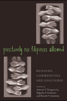

Essays challenging conventional narratives of Filipino American history and culture
Essays challenging conventional narratives of Filipino American history and culture


 Essays challenging conventional narratives of Filipino American history and culture
Essays challenging conventional narratives of Filipino American history and culture

|  |
Positively No Filipinos AllowedBuilding Communities and Discourseedited by Antonio T. Tiongson, Jr., Edgardo V. Gutierrez and Ricardo V. Gutierrez, foreword by Lisa Lowepaper EAN: 978-1-59213-122-8 (ISBN: 1-59213-122-0) |
"Taken together, the essays in Positively No Filipinos Allowed vigorously pursue Filipino American critique. They insist that the forgetting that renders the Filipino American 'lost to history' must be made visible and intelligible."
—Lisa Lowe, from the Foreword
From the perspectives of ethnic studies, history, literary criticism, and legal studies, the original essays in this volume examine the ways in which the colonial history of the Philippines has shaped Filipino American identity, culture, and community formation. The contributors address the dearth of scholarship in the field as well as show how an understanding of this complex history provides a foundation for new theoretical frameworks for Filipino American studies.
Excerpt available at www.temple.edu/tempress
"The primary strength of Positively No Filipinos Allowed is its overall theoretical and critical approach to analysis of the historical and contemporary Filipino experience in the United States. This is the ground-breaking anthology for which many scholars and students have been waiting decades. It will be viewed as the major edited work on Filipino Americans for years to come."
—Jonathan Y. Okamura, University of Hawai'i
"The essays deploy the notions of invisibility and forgetting, of transnationalism and disapora common to Filipino American studies, but more importantly the essays put them in relationship with each other....[Positively No Filipinos Allowed] successfully challenges us to look closely at Filipino American studies and what it might contribute to our understanding of Filipino America and beyond."
—The Journal of American Ethnic History
"On the whole, this is a thoughtful approach to charting Filipino-American research for the future."
—Multicultural Review
"The book is effectively structured…a fine collection…with an exceptionally good introduction."
—The Journal of Asian American Studies
"For readers in the Philippines, the anthology provides a critical lens for understanding the ways in which Filipino American social formations are shaped and constituted not only by the social, economic, and political conditions in the United States but also by U.S. (neo) colonialism in the Philippines. Taken together, the essays in Positively No Filipinos Allowed vigorously challenge the specter of Filipino invisibility."
—Philippine Studies
Also available in e-book
Foreword – Lisa Lowe
Acknowledgments
Introduction: Critical Considerations – Antonio T. Tiongson, Jr.
Part I. Imperial Legacies and Filipino Subjectivities
1. Patterns of Reform, Repetition, and Return in the First Centennial of the Filipino Revolution, 1896-1996 – Jody Blanco
2. On Filipinos, Filipino Americans, and U.S. Imperialism: Interview with Oscar V. Campomanes – Antonio T. Tiongson, Jr.
3. Filipino Bodies, Lynching, and the Language of Empire – Nerissa S. Balce
4. "Just Ten Years Removed from a Bolo and a Breech-cloth": The Sexualization of the Filipino "Menace" – Ruby C. Tapia
Part II. Public Policy, Law, and the Construction Of Filipinos
5. Losing Little Manila: Race and Redevelopment in Filipina/o Stockton, California – Dawn Bohulano Mabalon
6. Filipino Americans, Foreigner Discrimination, and the Lines of Racial Sovereignty – Angelo N. Ancheta
Part III. Reconfiguring the Scope of Filipino Politics
7. On the Politics of (Filipino) Youth Culture: Interview with Theodore S. Gonzalves – Antonio T. Tiongson, Jr.
8. Colonial Amnesia: Rethinking Filipino "American" Settler Empowerment in the U.S. Colony of Hawai'i – Dean Itsuji Saranillio
Part IV. Resignifying "Filipino American"
9. "A Million Deaths?" Genocide and the "Filipino American" Condition of Possibility – Dylan Rodríguez
10. Reflections on the Trajectory of Filipino/a American Studies: Interview with Rick Bonus – Antonio T. Tiongson, Jr.
11. Do You Mis(recognize) Me: Filipina Americans in Popular Music and the Problem of Invisibility – Elizabeth H. Pisares
12. A Different Breed of Filipino Balikbayans: The Ambiguities of (Re-)turning – S. Lily Mendoza
Notes
About the Contributors
Index
Antonio T. Tiongson, Jr. is a doctoral candidate in Ethnic Studies at the University of California, San Diego. His research focuses on Filipino youth cultural politics.
Edgardo V. Gutierrez is an engineer who earned his B.S. from Cal Poly San Luis Obispo and actively maintains his independent studies in Ethnic Studies.
Ricardo V. Gutierrez is a Strategic Consulting and Investment Management Industry Professional who earned his B.S. from San Francisco State University.
Asian American Studies
American Studies
Cultural Studies
Asian American History and Culture, edited by K. Scott Wong, Linda Trinh Võ, and Cathy Schlund-Vials.
Founded by Sucheng Chan in 1991, the Asian American History and Culture, series has sponsored innovative scholarship that has redefined, expanded, and advanced the field of Asian American studies while strengthening its links to related areas of scholarly inquiry and engaged critique. Like the field from which it emerged, the series remains rooted in the social sciences and humanities, encompassing multiple regions, formations, communities, and identities. Extending the vision of founding editor Sucheng Chan and emeriti editor Michael Omi and David Palumbo-Liu, series editors K. Scott Wong, Linda Trinh Võ, and Cathy Schlund-Vials continue to develop a foundational collection that embodies a range of theoretical and methodological approaches to Asian American studies.
© 2015 Temple University. All Rights Reserved. This page: http://www.temple.edu/tempress/titles/1763_reg.html.